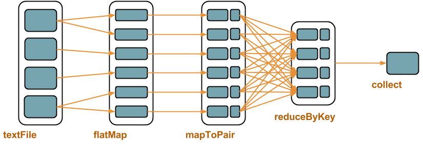

class: center, middle <img src="images/spark-logo.png" width="80%" style="margin-bottom:50px"> <img src="images/logo-codeurs-en-seine.png" width="40%" style="float:right;margin-left:40px;margin-top:20px;margin-bottom:20px"> Alexis Seigneurin<br>[@aseigneurin](https://twitter.com/ASeigneurin) <br>[@ippontech](https://twitter.com/ippontech) --- # Spark - Traitement distribué de large volumes de données - Commodity hardware --- # Histoire - 2009 : AMPLab de l'Université de Berkeley - Juin 2013 : "Top-level project" de la fondation Apache - Mai 2014 : version 1.0.0 - Actuellement : version 1.1.0 --- # Use cases - Analyse de logs - Traitement de fichiers texte - Analytics - Recherche distribuée (Google, avant) - Détection de fraude - Recommendation (articles, produits...) --- # Proximité avec Hadoop <img src="images/hadoop-logo.png" width="35%" style="float:right"> - Mêmes use cases - Même modèle de développement : MapReduce - Intégration dans l'écosystème --- # Plus simple qu'Hadoop - API plus simple à prendre en main - Modèle MapReduce "relâché" - Spark Shell : traitement interactif --- # Plus rapide qu'Hadoop [Spark officially sets a new record in large-scale sorting](http://databricks.com/blog/2014/11/05/spark-officially-sets-a-new-record-in-large-scale-sorting.html) (5 novembre 2014) - Tri de 100 To de données - **Hadoop MR : 72 minutes** avec 2100 noeuds (50400 cores) - **Spark : 23 minutes** avec 206 noeuds (6592 cores) --- exclude: true class: dense # Hadoop - Ecriture des résultats intermédiaires sur HDFS - Adapté aux traitements batches, pas au temps réel <img src="images/hadoop.png" width="100%"> --- exclude: true class: dense # Spark - I/Os agressivement optimisées - Une étape peut être un _map_ seul (!_reduce_) - Peut manipuler des types simples (!tuples) <img src="images/spark.png" width="100%"> --- # Ecosystème Spark - Spark - Spark Shell - Spark Streaming - Spark SQL - MLlib - GraphX --- # Intégration - Yarn, Zookeeper, Mesos - HDFS - Cassandra - Elasticsearch - MongoDB --- class: center, middle # Fonctionnement de Spark --- exclude: true class: dense # MapReduce - map() : découpe le problème -> distribution sur les noeuds - reduce() : remonte les résultats <img src="images/mapreduce.png" width="80%"> --- exclude: true # Manipulation de _tuples_ : - Clé - Valeur - Tuples indépendants les uns des autres --- class: dense # RDD - Resilient Distributed Dataset - Abstraction, collection traitée en parallèle - Tolérant à la panne - Manipulation de _tuples_ : - Clé - Valeur - Tuples indépendants les uns des autres --- class: dense # Sources : - Fichier sur HDFS - Fichier local - Collection en mémoire - S3 - Base NoSQL - ... - Ou une implémentation custom de `InputFormat` --- class: dense # Transformations - Manipule un RDD, retourne un autre RDD - Lazy ! - Exemples : * _map()_ : une valeur → une valeur * _mapToPair()_ : une valeur → un tuple * _filter()_ : filtre les valeurs/tuples * _groupByKey()_ : regroupe la valeurs par clés * _reduceByKey()_ : aggrège les valeurs par clés * _join()_, _cogroup()_... : jointure entre deux RDD --- class: dense # Actions finales - Ne retournent pas un RDD - Exemples : * _count()_ : compte les valeurs/tuples * _saveAsHadoopFile()_ : sauve les résultats au format Hadoop * _foreach()_ : exécute une fonction sur chaque valeur/tuple * _collect()_ : récupère les valeurs dans une liste (List< T >) --- class: center, middle # Exemple --- class: dense # Word count - Découpage des fichiers par fragments de 128 Mo (framework) - Découpage des fragments par lignes (framework) - Découpage des lignes en mots (map) - Comptage des mots (reduce) - Sur chaque noeud - Puis sur un noeud pour le résultat final --- class: full # Shakespeare, Hamlet, acte III, scène 1 <img src="images/wordcount.png" width="90%"> --- # Spark - Exemple ```java sc.textFile("some/text/files/*") .flatMap(line -> Arrays.asList(line.split("\\W"))) .mapToPair(word -> new Tuple2<String, Integer>(word, 1)) .reduceByKey((x, y) -> x + y) .collect(); ```  --- class: center, middle # Démo # Spark Shell --- # Démo de Spark Shell ``` $ spark-shell > var lines = sc.textFile(".../data/arbresalignementparis2010.csv") > lines.count() > var trees = lines.filter(s => !s.startsWith("geom")) > var treesSplit = trees.map(line => line.split(";")) > var heights = treesSplit.map(fields => fields(3).toFloat) > heights = heights.filter(h => h > 0) > heights.sum() / heights.count() ``` --- class: center, middle # Spark en Cluster --- # Topologie - Un master / des workers - (+ un master en standby) - Communication bidirectionnelle - On soumet une _application_ --- class: dense # Spark en Cluster Plusieurs options - YARN - Mesos - Standalone - Workers démarrés individuellement - Workers démarrés par le master --- class: dense # Stockage & traitements MapReduce - Spark (API) - Traitement parallèle - Tolérant à la panne Stockage - HDFS, base NoSQL... - Stockage distribué - Tolérant à la panne --- # Colocation données & traitement - Traiter la donnée là où elle se trouve - Eviter les network I/Os --- # Colocation données & traitement <img src="images/spark-cluster.png" width="80%" style="margin-left:10%"> --- class: center, middle # Démo # Spark en Cluster --- # Démo ```shell $ $SPARK_HOME/sbin/start-master.sh $ $SPARK_HOME/bin/spark-class org.apache.spark.deploy.worker.Worker spark://MBP-de-Alexis:7077 --cores 2 --memory 2G $ mvn clean package $ $SPARK_HOME/bin/spark-submit --master spark://MBP-de-Alexis:7077 --class com.seigneurin.spark.WikipediaMapReduceByKey --deploy-mode cluster target/pres-spark-0.0.1-SNAPSHOT.jar ``` --- class: center, middle # Spark Streaming --- # Micro-batches - Découpe un flux continu en batches - API identique <img src="images/sparkstreaming1.png" width="100%"> --- class: dense # Sources - Socket - Kafka - Flume - HDFS - MQ (ZeroMQ...) - Twitter - ... - Ou une implémentation custom de `Receiver` --- # DStream - Discretized Streams - Séquence de RDDs - Initialisé avec une `Duration` <img src="images/sparkstreaming2.png" width="100%"> --- # Window operations - Fenêtre glissante - Réutilise des données d'autres fenêtres - Initialisé avec _window length_ et _slide interval_ <img src="images/streaming-dstream-window.png" width="100%"> --- class: center, middle # Démo # Spark Streaming --- # Démo de Spark Streaming - Consommation de Tweets _#Android_ - [Twitter4J](http://twitter4j.org/) - Détection de la langue du Tweet - [Language Detection](https://code.google.com/p/language-detection/) - Indexation dans ElasticSearch - Analyse dans Kibana 4 --- exclude: true # Initialisation Spark Streaming ```java SparkConf sparkConf = new SparkConf() .setAppName("tweets worldcup") .setMaster("local[2]") .set("spark.serializer", KryoSerializer.class.getName()) .set("es.nodes", "localhost:9200") .set("es.index.auto.create", "true"); JavaStreamingContext sc = new JavaStreamingContext(sparkConf, new Duration(5000)); ``` --- exclude: true # Consommation et processing ```java String[] filters = { "#Android" }; TwitterUtils.createStream(sc, twitterAuth, filters) .map(s -> new Tweet(s.getUser().getName(), s.getText(), s.getCreatedAt(), detectLanguage(s.getText()))) .map(t -> mapper.writeValueAsString(t)) .foreachRDD(tweets -> { JavaEsSpark.saveJsonToEs(tweets, "spark/tweets"); return null; }); ``` --- class:dense # Démo - Lancer ElasticSearch ```shell $ curl -X DELETE localhost:9200 $ curl -X PUT localhost:9200/spark/_mapping/tweets '{ "tweets": { "properties": { "user": {"type": "string","index": "not_analyzed"}, "text": {"type": "string"}, "createdAt": {"type": "date","format": "date_time"}, "language": {"type": "string","index": "not_analyzed"} } } }' ``` - Lancer Kibana - <http://localhost:5601> - Lancer le traitement --- class: center, middle <img src="images/question-mark.jpg" width="60%"> <img src="images/logo-codeurs-en-seine.png" width="35%" style="float:right"> [@aseigneurin](https://twitter.com/ASeigneurin) - [@ippontech](https://twitter.com/ippontech) [aseigneurin.github.io](http://aseigneurin.github.io)<br>[blog.ippon.fr](http://blog.ippon.fr)